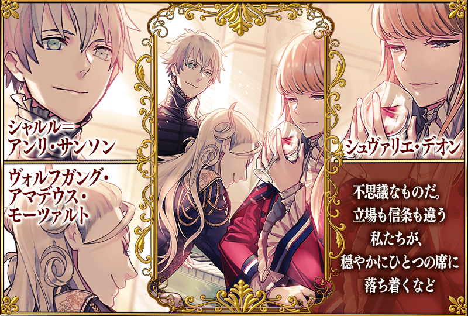
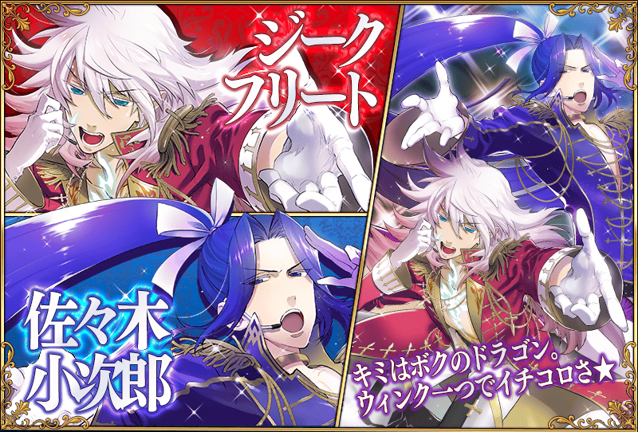
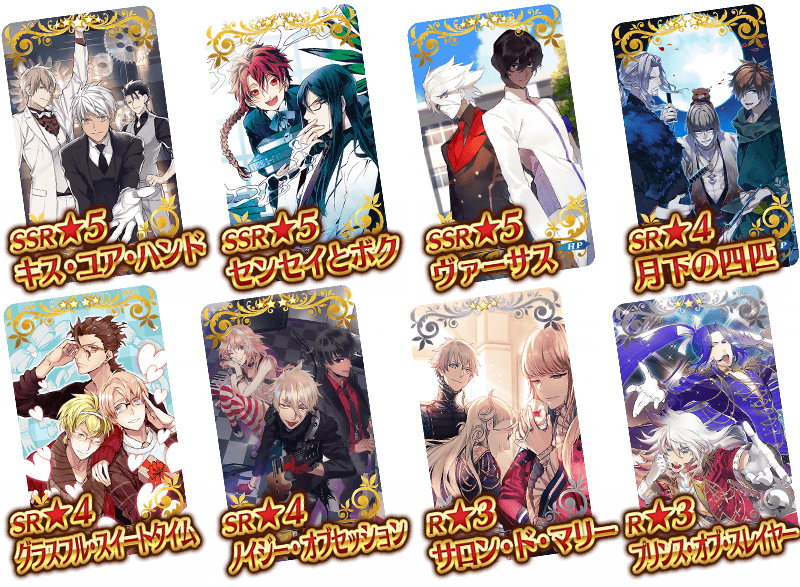

◆宣傳活動概要◆
披露男性Servant們各種Cosplay打扮的特別姿態，”男孩收藏”才有的概念禮裝在「迦爾帝亞男孩收藏2016 Pick Up召喚」中以期間限定登場！
這次紀念「迦爾帝亞男孩收藏2016 Pick Up召喚」，特別舉辦能從期間限定概念禮裝中選出喜歡的1張的宣傳活動！
◆宣傳活動期間◆
2016年3月10日（四）AM3:00～3月16日（三）12:59
◆交換方法◆
宣傳活動期間中，最初進行登入時給予「CBC2016邀請函」到禮物箱。
從禮物箱領取「CBC2016邀請函」後，在達文西工作房內的「迦爾帝亞男孩收藏2016交換」中，能從期間限定概念禮裝8張之中交換喜歡的1張。
※交換後的概念禮裝會發送到禮物箱。
※交換後「CBC2016特別邀請函」會消失。
※就算沒交換的話，在宣傳活動結束後，「CBC2016特別邀請函」也會消失。
◆交換對象◆
